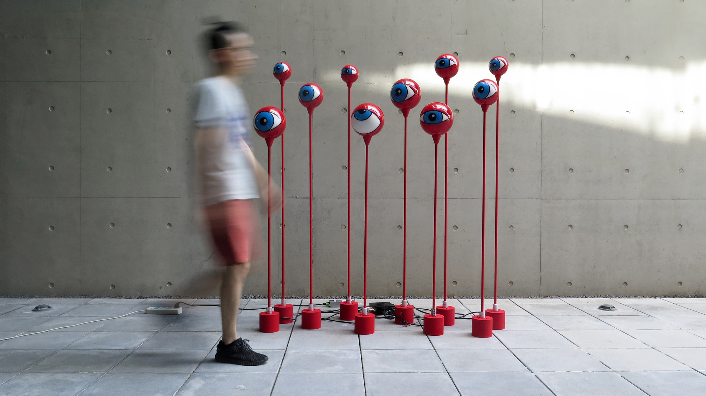
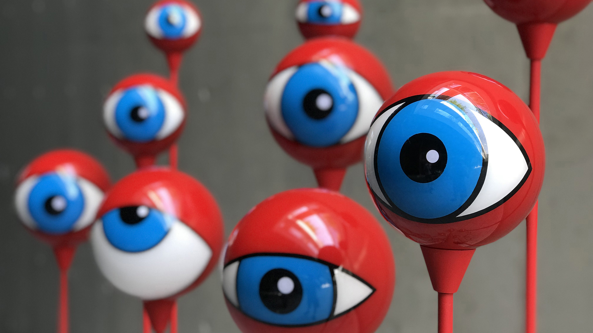
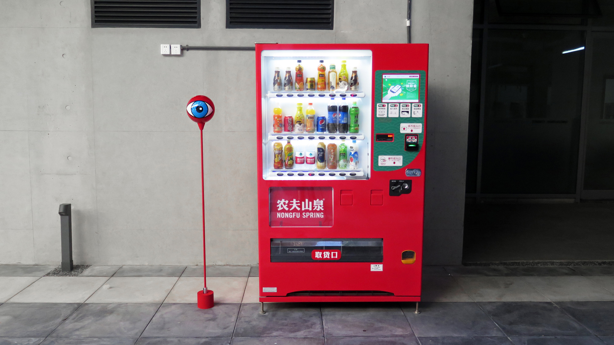
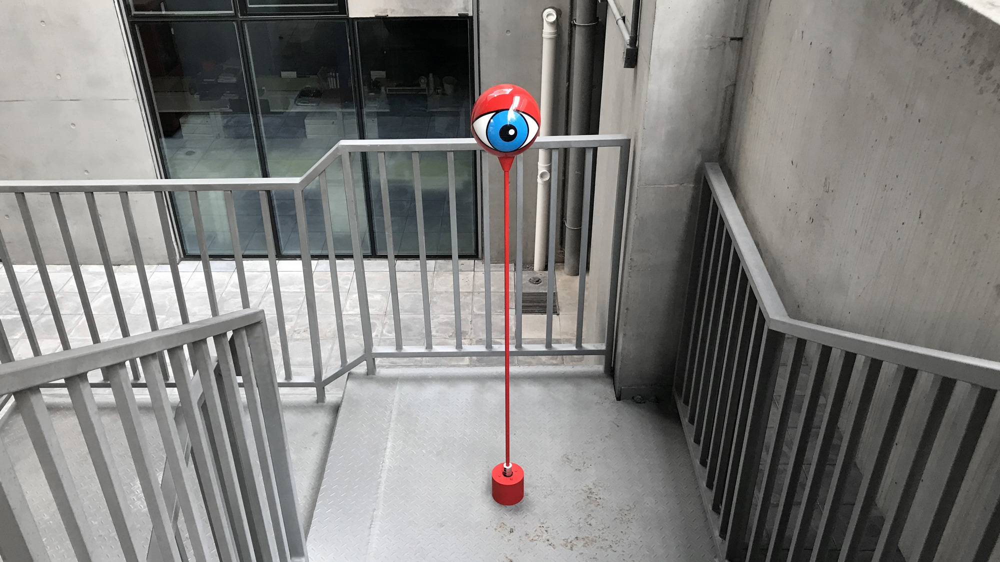
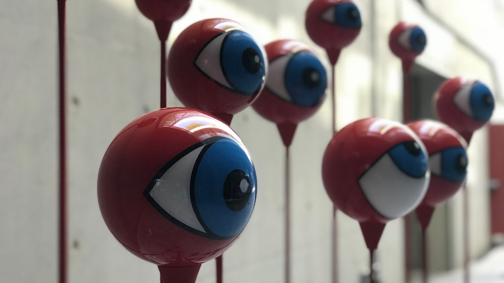

Eyeballz, 2018
Eyeballz is an interactive installation consisting of eyeball stands of various sizes and expressions, which look like mysterious creatures stepping out of a fantasy world.
Eyeballz tracks body movement through an external camera. The eyeballs rotate accordingly in response to people’s movement, following them as they go, as if they’re closely watching.
Eyeballz 眼球动态交互装置 由一组大小不一情态各异的竖立眼球组成，好似从幻想世界里走出来的奇异生物。Eyeballz通过摄像头捕捉人体运动，当行人出现在眼球视野范围之内时，它们会跟随人的移动而移动，形成“一直在看你”的效果。




